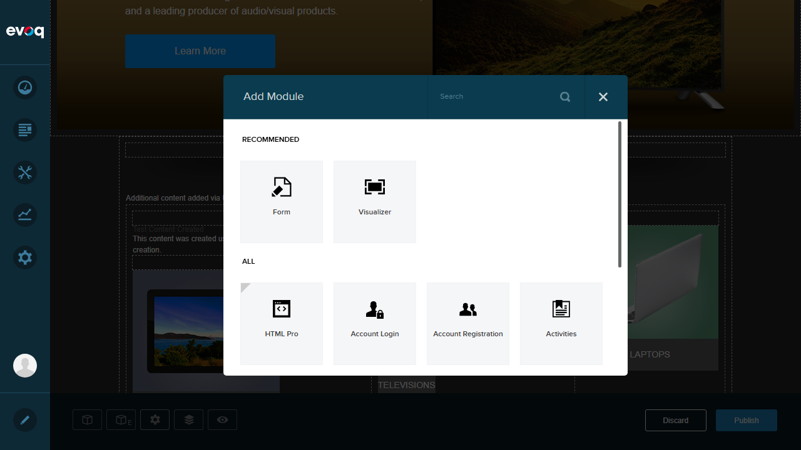

Test 1: Add Module to Content Layout Pane
PASSVerify that modules can be added to content layout panes using the Add Module functionality.
Step 1: Enter Edit Mode on the page
Step 2: Locate an empty Content Layout pane (F30A_Pane3)
Step 3: Click the module icon in the empty pane to open Add Module dialog
Step 4: Search for and select "HTML Pro" module
Step 5: Verify the module is added to the target pane
Result: HTML Pro module was successfully added to the empty F30A_Pane3 pane. The module appeared in the correct location with full editing capabilities.

Add Module dialog with HTML Pro module selected

HTML Pro module successfully added to pane